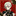
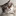

Mayoi Snake - Chapter 1
From Yoimonogatari by Nisioisin
Before the advent of the new goddess Mayoi Hachikuji, it was Nadeko Sengoku who resided at North Shirahebi Shrine—that is to say, it was me.
Me. Me!
But it’s not something I can puff up my chest with pride about; I didn’t behave like much of a goddess.
Well, I recently became a third year in middle school (technically, that is; I’m not attending), I got taller, and my bust size suddenly got bigger, but I still can’t puff up my chest with pride about it, nor do I remember it fondly.
Even now, when I think about what happened back then, I end up hunched over in shame.
As if a snake is raising its head at me.
I start swaying.
Yet despite that, I’m not so irresponsible as to not give this shrine or my successor any thought whatsoever. This new goddess, who had taken over where I left off—that is to say, who had taken over in the wake of the utter chaos I had caused—essentially, who had been forced to take on all my bad debt—had been on my mind, and I felt a vague sense of guilt.
Seems like it all comes back to snails.
I think there’s about as much difference between snakes and snails as there is between flamenco and hula dancing, but apparently they’ve been pressed into a three-way deadlock theory:
The frog fears the snake, the snake fears the slug, and the slug fears the frog—in other words, snails, which are closely related to slugs, are capable of swallowing up the threat of snakes.
You might be about to say, “Oh, I see,” and think you’ve learned something, but if you ask me, as someone who had all hundred thousand hairs on her head turn into snakes last year, I honestly don’t think this three-way deadlock theory holds water.
After all, snakes eat slugs—and snails too.
Snakes munch, crunch, and swallow them up.
There’s even a mountain snake that specializes in eating snails called “Iwasaki’s snail-eater”—to a snake, a frog, a slug, and a snail would look like a three-course meal.
Although that’s not exactly the reason why, I was a bit worried, a bit anxious about whether Mayoi Hachikuji-chan could handle taking over the responsibility that I had abandoned.
I was so preoccupied with my own issues, I kept calmly letting chances slip by, postponing and postponing, but now that the dust has settled on my failed first love, it seems the time has finally come.
I’ve moved on from Koyomi-san.
Now it’s time to move on from godhood.
If I don’t, I won’t be able to move on from middle school.
Notes
- faza210 liked this
 adampytlarz liked this
adampytlarz liked this - ilytblr liked this
 onoit liked this
onoit liked this - oni-no-onii-chan liked this
- raikouminamoto liked this
- qualityclodwobblerllama liked this
- moogii-shart liked this
- ghillliesirparmesan liked this
- dopepandamusic-blog liked this
semegane liked this
- amphibologeist liked this
- shou7 liked this
- fuhrealtho reblogged this from mirroredtranslations
- adchiat-blog liked this
 bythetrey liked this
bythetrey liked this 
nondescriptin-human reblogged this from mirroredtranslations- sejinpk liked this

shyboyfriendbye liked thissawri liked this
- kiwiyotsugi reblogged this from mirroredtranslations
- kiwiyotsugi liked this
notabrobro liked this
- freusan reblogged this from princessacerola
- freusan liked this
tackledkey liked this
- sky-chaser20 liked this
- mrglyra liked this
- eilnado liked this
- fvrmer liked this
kingdidico liked this
lally-ichigo liked this
- muraki-moon liked this
- princessacerola liked this
- sean-gaffney liked this
- angura-people-summer-holiday reblogged this from darkcherrymystery
- angura-people-summer-holiday liked this
higuchiharuka liked this
- mitsukosan-blog liked this
- meshitsukai liked this
- justintaco liked this
- simok123 liked this
astheircastlescrumbleslowly liked this
- mirroredtranslations posted this
- Show more notes